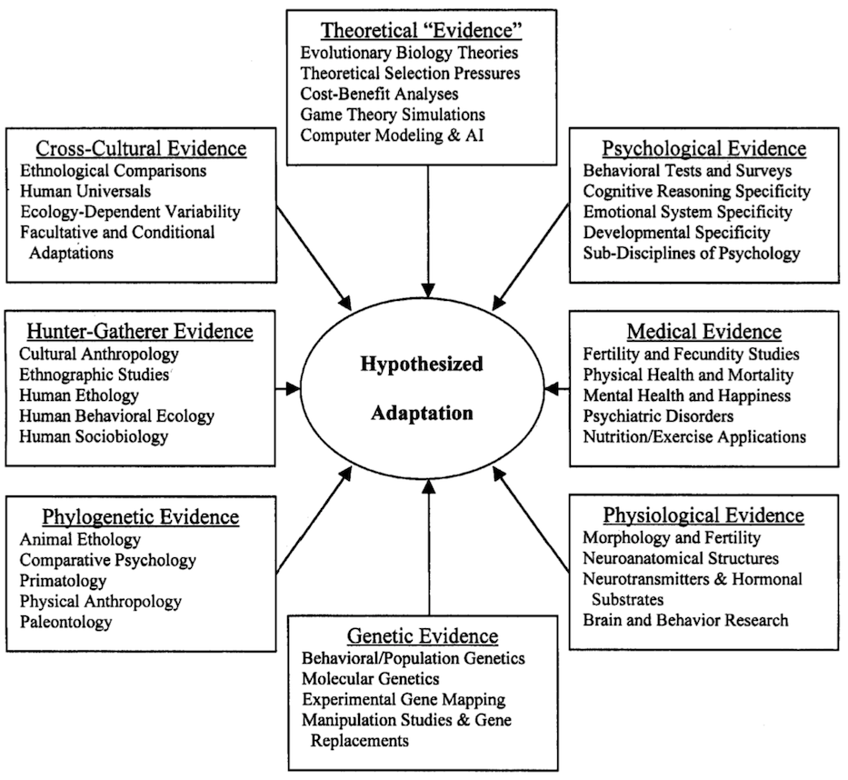

Subrena Smith recently argued that “evolutionary psychology, as it is currently understood, is…impossible” (Smith 2019). I agree with most of Smith’s premises, which are based on the logic of evolution by natural selection, and I think other evolutionary psychologists would too. So why does Smith conclude that evolutionary psychology (EP) is impossible but I conclude the opposite? Well, actually, Smith provides an example of evolved psychology that she considers “highly plausible,” directly contradicting her strong conclusion that EP is impossible. As I will show, this highly plausible example shares essential features with broad swaths of research in EP.
Smith does a decent job capturing the core tenets of EP: much like the rest of the body, the brain comprises many distinct functional components, termed psychological adaptations. These evolved by natural selection to solve particular computational problems related to survival and reproduction in ancestral environments, otherwise known as the environment of evolutionary adaptedness (EEA).
According to EP, evidence for the existence of a psychological adaptation includes (1) evidence of a computational problem posed by the ancestral environment (e.g., recognizing different types of foods and other objects); (2) evidence or argument that solving this computational problem would have increased the biological fitness of ancestors with the trait relative to those without it (e.g., by enabling them to find more food); (3) evidence that humans have the computational ability to solve precisely this problem (e.g., are able to rapidly recognize a large number of objects), which would typically include details about the specific algorithms involved; and (4) evidence that the computational ability reliably develops in (almost) all humans (of at least one sex), in all environments that do not deviate too much from the EEA. Together, these are taken as evidence of design – qualities that have been recognized since antiquity to distinguish “beneficial” organism traits from other natural phenomena (Aristotle, Physics II 8), and for which Darwin’s theory of natural selection provides the modern scientific explanation (Darwin 1859; Williams 1966).
Vision and hearing are uncontroversial examples of psychological adaptations, whereas mate preferences that differ between the sexes are somewhat controversial examples.
Smith’s main critique of EP involves what she calls the “matching problem.” For a cognitive trait such as object recognition to be an adaptation, it must be the case that not only does this trait reliably develop in modern humans, but it must have reliably developed in ancestral humans too, which Smith terms “strong vertical homology”:
For a contemporary trait to be a strong vertical homolog of an ancestral trait, the contemporary trait must be of the same kind as the ancestral one. It must also have the same function as the ancestral one, and must be related by descent to that ancestral trait as part of a continuous reproductive lineage extending back to the EEA. Additionally, it must be the case that the contemporary trait and the ancestral trait are of the same kind and have the same function because the present-day trait is descended from the ancestral trait.
I agree, and I think most evolutionary psychologists would too. In essence, Smith has added more requirements to the already long list that distinguish adaptations from other traits.
Smith then identifies the “matching problem”: how can we know that ancestral humans had the cognitive trait in question? After all, cognitive traits don’t fossilize. Furthermore, complex cognitive abilities can be acquired via learning. As one example, Smith points to reading.
EP would exclude reading cognition as a possible psychological adaptation because reading abilities do not reliably develop in all humans – many populations are non-literate, and many individuals within populations can fail to learn how to read. Still, it’s not hard to imagine an alternate universe where EP emerges as a discipline after literacy had become essentially universal and the existence of non-literate populations had been forgotten. Reading would then satisfy all three criteria above: it’s a complex cognitive ability, it provides many benefits, and (in the alternate universe) it reliably develops in essentially all modern humans. Yet the inference that reading is an adaptation would be incorrect. As Smith argues:
[E]volutionary psychological claims fail unless practitioners can show that mental structures underpinning present-day behaviors are structures that evolved in the EEA for the performance of adaptive tasks that it is still their function to perform. This is the matching problem.
At first, it seems like the matching problem is insurmountable. How can we possibly know the mental structures of ancestors living hundreds of thousands or millions of years ago?
In the face of such a barrier to scientific investigation, Smith seems to favor what she views as the evolutionary alternative to EP, that “evolution fashioned the human mind as a domain-general or modestly modular learning system.” This leaves the impression that because (in her view) EP hypotheses cannot be tested, they are therefore false, and that because (in her view) a domain-general learning system can be tested, it is more likely to be true. No such inference is possible, of course. At best, based on her analysis, we would have to admit that EP hypotheses could be true but we can’t collect some of the evidence needed to test them.
Fortunately, Smith herself provides a solution to the matching problem:
To appreciate the differences between good evolutionary biological inferences and the inferences made in evolutionary psychological studies such as the one described in the previous section, consider a highly plausible evolutionary account – the claim that the eye-blink reflex (corneal reflex) was selected for as a mechanism to protect the eye from injury (Hall 1945). There are several converging lines of evidence that give substance to this claim. The first is that the reflex is highly conserved, as it is found in all mammalian taxa, and even in other taxa such as avians. Thus, comparative methods suggest that the reflex is under genetic control and that it was retained in the lineage because of its function.1
So, it turns out that ordinary homology provides convincing evidence for strong vertical homology, and thus solves the matching problem.
Although not acknowledged by Smith, evolutionary psychologists emphasize the importance of comparative data, including both homologies and analogies (see Figure 1).
Broad swaths of evolutionary psychology draw on homologies between human psychology and the psychology of our primate and mammalian relatives. There is even an Oxford Handbook of Comparative Evolutionary Psychology (Vonk & Shackelford 2012).

Examples of comparative evolutionary psychology include spatial memory (Haun et al. 2006), pathogen avoidance (Schaller 2015), attachment and maternal care (Maestripieri & Roney 2006), the expression of emotions (Darwin 1872), prosociality (Silk and House 2012), the biological roots of music (Hagen and Hammerstein, 2009), and social learning (Whiten 2017). To the degree that the evidence supports homology (and can rule out analogy), we can be confident that human ancestors possessed the trait in question.
Keep in mind that Smith is arguing that EP is impossible in principle. The strength or weakness of the empirical evidence in each of the above examples, which varies quite a bit, is therefore not at issue. At issue is whether it is possible to provide convincing evidence of homology, and thus that human ancestors possessed the cognitive mechanisms in question. The eye-blink and other examples make clear that it is, and that evolutionary psychologists are attuned to the theoretical importance of homologies between psychological traits in humans and those in our relatives. By Smith’s own criteria, much EP is possible.
Putative psychological adaptations that are unique to the human lineage, however, present difficulties. One can no longer invoke homology as evidence that cognitive structures that reliably develop in modern humans also did so in ancestral humans. Language is an ideal example because language abilities are not present in chimpanzees or other primate relatives. Indeed, although some evolutionary psychologists argue that language has all the hallmarks of adaptation, such as complex cognitive design, fitness benefits, and reliable development in all humans (e.g., Pinker and Bloom 1990; Pinker and Jackendoff 2005), other evolutionary and cognitive researchers argue that there was no selection for language specifically and that it instead emerges, e.g., as a byproduct of cognitive abilities such as recursion (Hauser et al. 2002) or from learning and other cognitive biases and coordination with others (Christiansen and Chater 2008).
As Smith repeatedly notes, psychological adaptations, like other adaptations, are inherited genetically. She fails to acknowledge, though, that we now have the complete sequence of the human genome, and the genome contains information on human-specific positive selection (I blog about genetic evolution in the human lineage here). We do not yet have the knowledge to link the development of most human adaptations, psychological or physiological, to specific sequences in the genome. But when it comes to language, there is progress. Rare mutations in FOXP2, a transcription factor, appear to disrupt language development, suggesting that FOXP2 plays a critical role in language. There is evidence that transcriptional enhancers in the FOXP2 locus underwent accelerated evolution in the human lineage (Caporale et al. 2019).
At this point, such evidence is suggestive at best. Genes have multiple effects and it could be that positive selection on FOXP2 regulation was due to non-language or non-cognitive effects of FOXP2. It could also be that FOXP2 influences language via, e.g., its effects on aspects of cognition that are not specific to language, such as recursion, and it was these abilities that underwent recent positive selection. Still, these results indicate that in coming years it might be possible to test EP and other adaptationist hypotheses using genetic data.
But even without genetic data, it is possible to test adaptationist hypotheses about species-specific adaptations. Imagine, for instance, that species X, which is living in an environment disturbed by recent human activity, has a complex soft-tissue trait that reliably develops in all members of the species. This trait doesn’t fossilize, it does not appear in any other species, and its genetic basis is unknown. It could be that this trait is a non-functional developmental consequence of novel environmental factors – perhaps chemical pollutants. But it could be an adaptation. Research on the trait, its relationship to what we know about the species’ ancestral environment, how the species makes a living, and on the underlying developmental mechanisms, as well as theoretical advances, can either indicate design or the lack thereof, and thus add weight to an adaptationist or non-adaptationist hypothesis, respectively. This approach characterizes research on menopause, which only occurs in humans and four species of toothed whales, and for which there are many competing hypotheses involving adaptation vs. byproduct of senescence (e.g., Kirkwood & Shanley 2010; Johnstone & Cant 2019). Yet according to Smith, in such cases scientists should just throw up their hands.
Smith’s view of science is myopic. Abduction, i.e., inference to the best explanation, is the cornerstone of scientific methodology (Douven 2017). Scientific hypotheses compete with one another to provide the “best” explanation of some phenomenon, where “best” typically involves criteria like accurately predicting new and surprising observations, parsimony, and coherence. Abduction specifically does not require that scientists produce direct evidence for every single entailment of the hypothesis. The eye-blink adaptation hypothesis entails a genetic basis for the reflex, yet Smith is willing to accept the hypothesis without direct evidence for eye-blink genes. “Strong vertical homology” is just another of the many criteria any hypothesis of complex adaptation must meet, and not the most important one (that honor belongs to design). And, contra Smith, more such criteria make a theory more testable, not less, because there are now more ways to falsify it. EP hypotheses make many unique predictions that are testable in living humans, and are thus able to compete with other hypotheses to explain language and other cognitive phenomena.
Smith, nevertheless, is right to draw attention to the importance of homology and the comparative method in testing adaptationist hypotheses. And to be fair, EP probably under-utilizes this powerful tool. She is wrong to ignore the many EP studies that do employ the comparative method, however, and she incorrectly concludes that if evidence for one of the many predictions of an adaptationist hypothesis is currently missing (e.g., evidence of “strong vertical homology”) it is therefore impossible to test that hypothesis against competing hypotheses.
Many thanks to Laith Al-Shawaf for helpful comments on an earlier draft.
2020/01/25: Added refs for menopause example.
References
Caporale, A. L., Gonda, C. M., & Franchini, L. F. (2019). Transcriptional Enhancers in the FOXP2 Locus Underwent Accelerated Evolution in the Human Lineage. Molecular biology and evolution, 36(11), 2432-2450.
Christiansen, M. H., & Chater, N. (2008). Language as shaped by the brain. Behavioral and Brain Sciences, 31(5), 489-509.
Darwin, C (1859) On the Origin of Species. John Murray.
Darwin, C (1872) The Expression of the Emotions in Man and Animals. John Murray.
Douven, Igor, “Abduction”, The Stanford Encyclopedia of Philosophy (Summer 2017 Edition), Edward N. Zalta (ed.), https://plato.stanford.edu/archives/sum2017/entries/abduction/.
Hagen EH and Hammerstein P (2009). Did Neanderthals and other early humans sing? Seeking the biological roots of music in the loud calls of primates, lions, hyenas, and wolves. Musicae Scientiae, 291-320.
Haun, D. B., Call, J., Janzen, G., & Levinson, S. C. (2006). Evolutionary psychology of spatial representations in the hominidae. Current Biology, 16(17), 1736-1740.
Hauser, M. D., Chomsky, N., & Fitch, W. T. (2002). The faculty of language: what is it, who has it, and how did it evolve? Science, 298(5598), 1569-1579.
Johnstone, R. A., & Cant, M. A. (2019). Evolution of menopause. Current Biology, 29(4), R112-R115.
Kirkwood, T. B., & Shanley, D. P. (2010). The connections between general and reproductive senescence and the evolutionary basis of menopause. Annals of the New York Academy of Sciences, 1204(1), 21-29.
Maestripieri, D., & Roney, J. R. (2006). Evolutionary developmental psychology: Contributions from comparative research with nonhuman primates. Developmental Review, 26(2), 120-137.
Pinker, Steven, and Paul Bloom. “Natural language and natural selection.” Behavioral and brain sciences 13.4 (1990): 707-727.
Pinker, S., & Jackendoff, R. (2005). The faculty of language: what’s special about it?. Cognition, 95(2), 201-236.
Schaller, M. (2015). The behavioral immune system. The Handbook of Evolutionary Psychology.
Schmitt, D. P., & Pilcher, J. J. (2004). Evaluating evidence of psychological adaptation: How do we know one when we see one?. Psychological Science, 15(10), 643-649.
Silk, J. B., & House, B. R. (2012). The Phylogeny and Ontogeny of Prosocial Behavior. The Oxford Handbook of Comparative Evolutionary Psychology, 381.
Smith, S. E. (2019). Is Evolutionary Psychology Possible? Biological Theory. https://doi.org/10.1007/s13752-019-00336-4
Vonk, J., & Shackelford, T. K. (Eds.). (2012). The Oxford Handbook of Comparative Evolutionary Psychology. OUP USA.
Whiten, A. (2017). Social learning and culture in child and chimpanzee. Annual Review of Psychology, 68, 129-154.
Williams, G. C. (1966) Adaptation and Natural Selection. Princeton University Press.
Footnotes
Smith provides additional lines of evidence for an eye-blink adaptation that are either the same as standard adaptationist arguments and/or do not address the matching problem: “Second, it is clear that the eye-blink reflex protects the eye from injury in the taxa where it is found. Third, it is clear that the fitness of organisms that rely on vision would be impeded if there were not some mechanism for protecting the eye from injury. Fourth, the physiological mechanism underpinning the reflex is well understood. Fifth and finally, the reflex operates automatically, and is therefore mandatory. It is not “up to” the organism whose reflex it is. These five factors, taken together, support the claim that the eye-blink reflex in contemporary humans is strongly vertically homologous to the eye-blink reflex in earlier members of the lineage.”↩︎